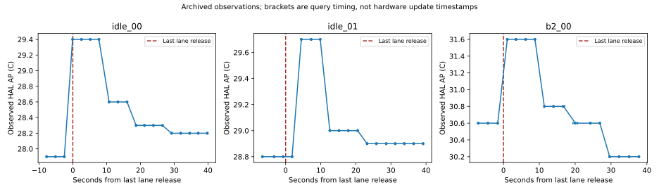

새 실측 없음 · 후보 재보정 없음 · experiment_ready=false
고정 CC_DG 회고 비교는 사용 가능. 동적 정책 전체창 실측 J/AP 지원은 0개이며 정확도 PASS·정책 우열은 미판정.
기존8세션 유휴19구간 중 한 확인 세션의2구간에서 상승 후 하강. 단일 AP 상태의 고정 유휴 평형식으로는 이 관측 형태를 표현할 수 없습니다. 센서 내부 갱신시각과 실제 열 지연은 분리 식별되지 않았습니다. 후보 확인 MAE0.418°C는 기본 채택 또는 정책 비교 합격이 아닙니다.

원래 동결 W 재사용. 이후 관측 전류/AP는 예측 입력이 아닙니다. AP 후보는 W를 변경하지 않습니다. 기기 전체 raw=mA 조건부 J이며 절대 정확도 미인증.
| 기록 | 관측 J | 동결식 J | 차이 J | 상대차이 |
|---|---|---|---|---|
| idle_00 | 135.618 | 155.708 | +20.090 | +14.814% |
| idle_01 | 144.565 | 155.870 | +11.305 | +7.820% |
| b2_00 | 154.696 | 155.758 | +1.062 | +0.686% |
B2의 작은 전체차이를 보편 오차 한도로 사용하지 않습니다. 구간 상쇄·혼합표본은 CSV에 보존했습니다. 세 기록의 총량 차이는 정책 절감량이 아닙니다.
같은870건(분류 CPU678·탐지 GPU192), 4개 resident runtime, 공통480초의 저장 관측입니다. 개발/확인 각 방식 1세션씩이며 독립 변동성은 모릅니다. 완료시점까지 J와 공통창 J는 서로 다른 경계입니다. 모든 J는 기기 전체 raw=mA 조건부 값입니다.
| 자료 역할 | 방식 | 완료 초 | 완료시점 J | 공통480초 J | 부하 AP 최고 °C |
|---|---|---|---|---|---|
| development | serial | 326.085 | 578.384 | 758.842 | 31.2 |
| development | parallel | 203.628 | 398.583 | 722.588 | 32.4 |
| confirmation | parallel | 202.755 | 410.482 | 730.999 | 32.8 |
| confirmation | serial | 329.073 | 553.822 | 726.440 | 30.9 |
병행−직렬의 공통창 J는 개발 -36.255J에서 확인 +4.559J로 방향이 뒤집혔습니다. 완료시간 이득만으로 공통창 에너지 절감을 주장할 수 없습니다. 4세션 관측 그림 · 연구 결과 본문·오차 분해.
아래는 공통480초·개발 템플릿·저장 확인자료의 회고 예측 비교입니다. 다른 작업량/도착/시작AP는 미지원. 결과는 TRADEOFF, 정책 선택값=null. 확인 결과를 이미 본 뒤 작성한 템플릿의 사후 holdout입니다.
| 병행−직렬 | 템플릿 예측 | 저장 확인 관측 |
|---|---|---|
| work_completion_s | -122.456 | -126.319 |
| common_window_energy_j_conditional | -36.216 | +4.559 |
| load_ap_peak_c | +1.500 | +1.900 |
기존 CPU_URGENT/B2/B3의 저장 일정·응답은 활용할 수 있습니다. 전체창 실측 기반 J/AP 순위는 아직 계산 불가입니다. B2/B3가 쓰는 짧은 CG_DC/DC_DG→유휴 전이에서 비용·AP 반응·일정 오차와 정책 간 차이를 구분할 근거가 필요합니다. 센서 지연과 숨은 열을 근거 없이 계수로 채우거나 새 실행을 자동 시작하지 않습니다.